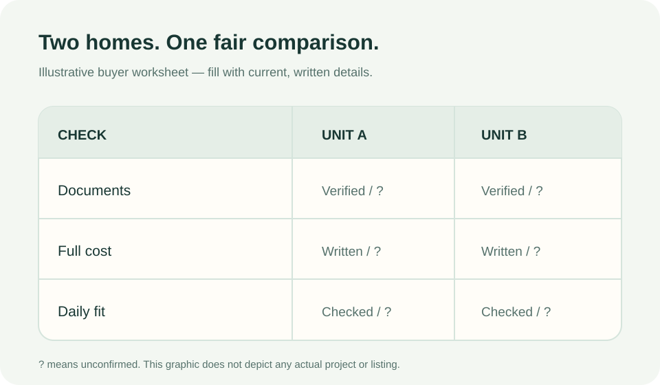
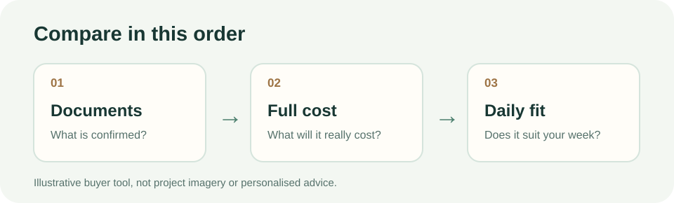

Short answer: Put both units in the same comparison table. For each claim, note the document that supports it, the full cost and whether the home fits your normal week. Leave an item marked unconfirmed until you have a current written answer. A beautiful show unit is useful for understanding a layout; it is not enough to settle a purchase decision.

If this is your first visit, start with Esther's six questions to ask before viewing a new condo in JB. The comparison below is the next step once you have two real units to consider.
What belongs in the comparison table?
| Compare | Unit A | Unit B | Evidence to request |
|---|---|---|---|
| Exact unit and layout | Write it down | Write it down | Current floor plan and unit details |
| What is included | Included / excluded / unclear | Included / excluded / unclear | Current specifications and written package terms |
| Upfront and ongoing cost | Amount or estimate | Amount or estimate | Written price, fee and financing information |
| Daily fit | What works; what does not | What works; what does not | Your own visit and route check |
| Unanswered questions | Who will reply and when | Who will reply and when | Dated written follow-up |
The table is a decision aid, not a score that declares one home the winner. An empty box tells you what to check next.
Which facts should be verified first?
Match each project's developer name, relevant licence and advertising and sales permit details to the documents you receive. Compare the land tenure, floor plan, stated area, specifications, facilities, expected completion information and the actual unit being offered. Malaysia's National Housing Department homebuyer guidance lists these kinds of project and brochure details as buyer checks, and its TEDUH portal provides a licence and permit search. If a material claim does not match, ask for a current written explanation. For title or contract matters, ask your solicitor to review the relevant documents.

How do I compare cost fairly?
Use one worksheet for both units. Include the current selling price, cash needed upfront, estimated instalment, maintenance and sinking-fund charges, parking, insurance, furnishing and routine travel. Some figures depend on your lender and circumstances: mark them as estimates until you receive written terms. Bank Negara Malaysia's responsible-lending explanation says affordability involves repayment after essential spending and other obligations, with room for living expenses and changes in costs. Loan eligibility alone does not tell you whether the monthly cost is comfortable for you.
What if one unit looks better but has more unknowns?
Keep it on the shortlist, but do not treat missing information as a benefit. Ask for the exact documents, charges and terms behind its strongest selling points. Compare the homes again when both columns contain current information. You can also revisit the locations at the times you expect to travel or use nearby services. This method helps you separate a real advantage from a good viewing-day impression.
One question before you decide
Which point in your table would change your choice if the written answer were different? Resolve that point first. You do not need to rush a decision while an important condition remains unclear.
This is a general comparison method, not a recommendation of any development or personalised legal or financial advice. If you are considering The Celestz in Kebun Teh, apply the same table to its current documents and the specific unit you are offered.
Want help framing your questions?
You can say which two layouts or areas you are comparing. Share only the details you are comfortable sharing.
Ask Esther on WhatsApp